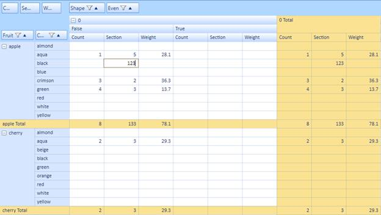
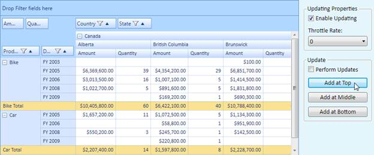

You can enable updating in value and total cells by setting the EnableValueEditing and EnableUpdating Boolean properties of the PivotGrid control to true. Enabling the AllowEditingOfTotalCells property allows you to edit the total cells in the PivotGrid control.
|
[C#] // To Enable Editing Value cells in PivotGridControl this .pivotGrid1.EnableValueEditing = true; // To Enable Updating in PivotGridControl this .pivotGrid1.EnableUpdating = true; // To Enable Editing Total cells in PivotGridControl this.pivotGrid1.EditManager.AllowEditingOfTotalCells = true; |
|
[VB] ‘To Enable Editing in PivotGridControl Me .pivotGrid1.EnableValueEditing = True ‘To Enable Updating in PivotGridControl Me .pivotGrid1.EnableUpdating = True ‘To Enable Editing Total cells in PivotGridControl Me.pivotGrid1.EditManager.AllowEditingOfTotalCells = True |

Figure 44: Editing in Value Cells

Figure 45: Updating in PivotGridControl
A custom editing manager can be used so that you can format the PivotCellInfo. This can be handled by overriding the ChangeValue event. The following code demonstrates its implementation where the formatted text is customized by appending * after editing the cell.
|
[C#] //User derived EditManager. this .pivotGrid1.EditManager.Dispose(); //dispose the current one... //Set the derived one... this .pivotGrid1.EditManager = newCustomEditManager(this.pivotGrid1);
//Custom Editing manager public class CustomEditManager : PivotEditingManager { public CustomEditManager(PivotGridControl pg) : base(pg) {}
protectedoverridevoid ChangeValue(object oldValue, object newValue, int row1, int col1, PivotCellInfo pi) { //do the base change base.ChangeValue(oldValue, newValue, row1, col1, pi);
//mark all the adjusted cell contents pi.FormattedText +="*"; } } |
|
[VB] 'User derived EditManager. Me .pivotGrid1.EditManager.Dispose() 'dispose the current one... 'Set the derived one... Me .pivotGrid1.EditManager = New CustomEditManager(Me.pivotGrid1)
//Custom Editing manager Public Class CustomEditManager Inherits PivotEditingManager PublicSubNew(ByVal pg As PivotGridControl) MyBase.New(pg) EndSub
ProtectedOverridesSub ChangeValue(ByVal oldValue AsObject, ByVal newValue AsObject, ByVal row1 AsInteger, ByVal col1 AsInteger, ByVal pi As PivotCellInfo) 'do the base change MyBase.ChangeValue(oldValue, newValue, row1, col1, pi)
'mark all the adjusted cell contents pi.FormattedText &= "*" EndSub EndClass |
While updating the PivotGrid control you can throttle its updating speed which can be set through the ThrottleUpdateRate property. It gets the value in milliseconds as the time interval for UI refreshes to take place. Zero indicates immediate refresh of the UI without any delays. Throttling the refresh rate can minimize CPU usage. The default value is zero, but depending upon your updating rate, values of 300 to 500 milliseconds may give lower CPU usage. The following code explains its implementation.
|
[C#] // To set throttle rate for updating in PivotGridControl this .pivotGrid1.UpdateManager.ThrottleUpdateRate = 300; |
|
[VB] ‘To set throttle rate for updating in PivotGridControl Me .pivotGrid1.UpdateManager.ThrottleUpdateRate = 300 |